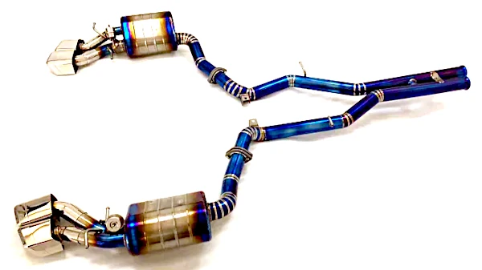

Maximize Power in Your Mercedes CLS63: Titanium Valved Catback Exhaust
Upgrade your Mercedes CLS63 and maximize its power with a high-quality titanium valved catback exhaust system. This advanced exhaust system offers a range of benefits, including increased horsepower and torque, enhanced sound, and reduced weight. Experience the perfect blend of performance and style, transforming your driving experience. Use code 'exhaust.contact' for a special 5% discount."
-5% CODE: exhaust.contact